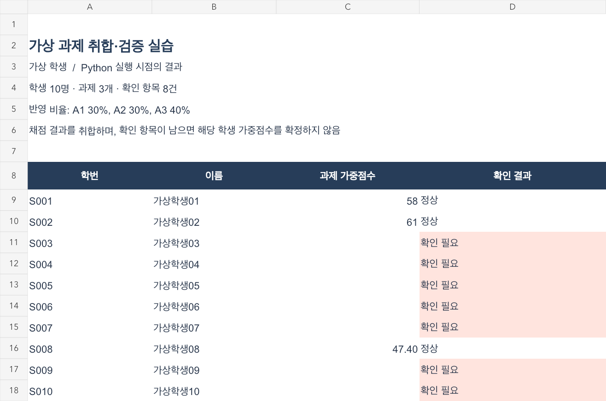

성적 파일 연결 및 입력 검증
시험 점수를 Excel에 입력했던 업무를 바탕으로 검증 항목을 정리했습니다. Python·openpyxl로 파일을 읽고 학번과 과제를 기준으로 기록을 연결하는 실습을 진행했습니다. AI의 코드 작성 지원을 받아 누락·중복·범위 위반을 구분하도록 구성했습니다.
2025.12 · 그레이더 경험 기반 개인 실습
여러 성적 파일의 누락·중복과 수정 이력을 확인하는 데이터 검증 도구
담당 역할 · 요구사항 정의 · AI 지원 구현
여러 성적 파일을 연결해 입력 누락·중복·범위 위반을 확인하고, 수정 전후 차이를 비교하는 개인 데이터 검증 실습입니다. 그레이더 업무에서 시험 점수를 Excel에 입력했던 경험을 바탕으로 했습니다.
요구사항을 정리하고 AI의 코드 작성·실행 지원으로 진행한 개인 실습입니다. 결과는 합성 데이터 검증 기록을 기준으로 설명합니다.
주요 기능의 처리 순서 · 구현 설명용 도식
학번·과제를 기준으로 파일 기록 연결
미입력·중복·범위 위반 분리
확인할 입력을 제외한 기록만 집계
스냅샷과 입력 항목별 변경 비교
여러 파일을 함께 확인할 때 합계만 비교하면 미입력·중복 기록이나 총점이 같은 부분점수 변경을 놓칠 수 있었습니다.
검증 기준을 정리하고 AI의 코드 작성·실행 지원으로 입력 검증과 수정 전후 비교 기능을 구성했습니다.
시험 점수를 Excel에 입력했던 업무를 바탕으로 검증 항목을 정리했습니다. Python·openpyxl로 파일을 읽고 학번과 과제를 기준으로 기록을 연결하는 실습을 진행했습니다. AI의 코드 작성 지원을 받아 누락·중복·범위 위반을 구분하도록 구성했습니다.
빈 셀을 0점으로 바꾸면 미제출과 실제 0점을 구분할 수 없어, 두 값을 별도로 처리했습니다. 확인이 필요한 기록은 미확정 상태로 분리하고 검증을 통과한 기록만 집계하도록 했습니다.
수정 전 입력 스냅샷과 파일의 SHA-256 해시를 저장하고, 다시 실행했을 때 항목별 입력을 비교하도록 구성했습니다. 총점이 같아도 부분점수가 달라진 경우를 찾을 수 있도록 결과 합계와 원본 입력을 각각 비교했습니다.
AI 지원으로 실행한 합성 데이터 378건의 검증 기록에서 합계가 기대값과 일치했고, 테스트 18개가 통과했습니다. 원본 입력 변경 10건에는 합계가 유지된 부분점수 변경도 포함됐습니다. 계산 결과뿐 아니라 확인이 필요한 입력과 수정 내역을 구분하는 실습 결과를 남겼습니다.
가상 학생 10명·과제 3개로 만든 초기 검증 실습입니다. 확인이 필요한 입력은 합계 확정을 보류합니다. 아래 화면은 합성 378건의 후속 실험과 별도 자료입니다.

# Source: test_assignment_automation.py
# AI-assisted lab; synthetic records only.
# Excerpt, not a standalone executable.
def test_zero_and_weighted_result(self):
details, _, totals, _ = collect(self.inputs)
zero = next(r for r in details if r[0] == "S008" and r[2] == "A3")
self.assertEqual(zero[3:5], [0, "정상"])
# S008: A1=A2=79점, A3=0점 -> 79×0.3+79×0.3=47.4
self.assertEqual(next(r for r in totals if r[0] == "S008")[2], 47.4)
self.assertIsNone(next(r for r in totals if r[0] == "S003")[2])
AI 지원으로 작성한 실습 테스트의 실제 발췌입니다. 단독 실행용 파일은 아닙니다.
미입력을 정상 점수로 집계하지 않도록 별도 상태로 처리했습니다. 확인이 필요한 입력은 최종 집계에서 분리하는 기준을 고려했습니다.
합계 비교만으로는 부분점수 변경을 놓칠 수 있어 원본 입력도 비교했습니다. SHA-256은 파일 변경 여부 확인에 사용했습니다.